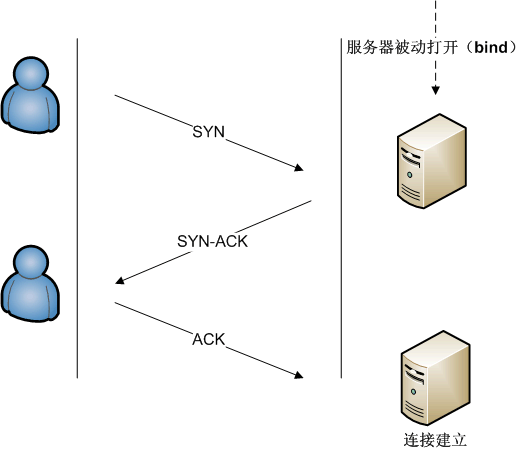
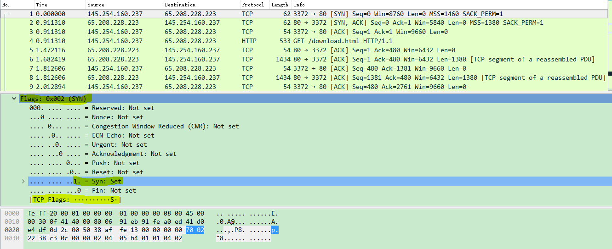
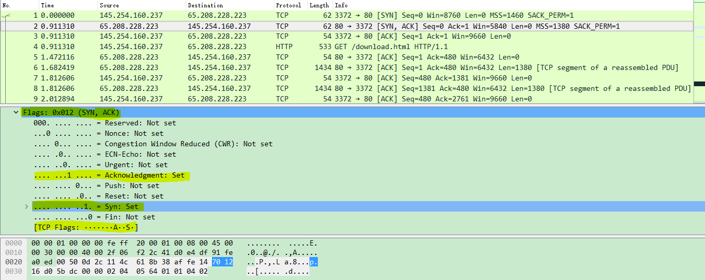
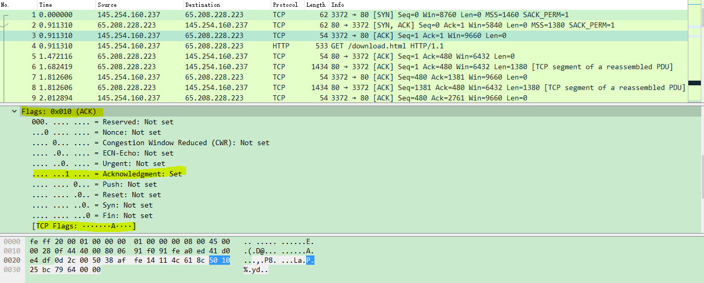
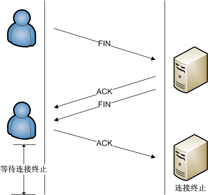

Wireshark（前称Ethereal）是一个免费开源的网络嗅探程序，网络数据包分析软件。网络数据包分析软件的功能是截取网络数据包，并尽可能显示出最为详细的网络数据包数据。
基本
抓取报文
下载和安装好Wireshark之后，启动Wireshark并且在接口列表中选择接口名，然后开始在此接口上抓包。
点击接口名称之后，就可以看到实时接收的报文。Wireshark会捕捉系统发送和接收的每一个报文。如果抓取的接口是无线并且选项选取的是混合模式，那么也会看到网络上其他报文。
上端面板每一行对应一个网络报文，默认显示报文接收时间（相对开始抓取的时间点），源和目标IP地址，使用协议和报文相关信息。点击某一行可以在下面两个窗口看到更多信息。“+”图标显示报文里面每一层的详细信息。底端窗口同时以十六进制和ASCII码的方式列出报文内容。
需要停止抓取报文的时候，点击左上角的停止捕获分组按键。
- 色彩标识:
进行到这里已经看到报文以绿色，蓝色，黑色显示出来。Wireshark通过颜色让各种流量的报文一目了然。比如默认绿色是TCP报文，深蓝色是DNS，浅蓝是UDP，黑色标识出有问题的TCP报文——比如乱序报文。
- 报文样本:
比如说你在家安装了Wireshark，但家用LAN环境下没有感兴趣的报文可供观察，那么可以去Wireshark wiki下载报文样本文件。
打开一个抓取文件相当简单，在主界面上点击Open并浏览文件即可。也可以在Wireshark里保存自己的抓包文件并稍后打开。
过滤报文
如果正在尝试分析问题，比如打电话的时候某一程序发送的报文，可以关闭所有其他使用网络的应用来减少流量。但还是可能有大批报文需要筛选，这时要用到Wireshark过滤器。
最基本的方式就是在窗口顶端过滤栏输入并点击Apply（或按下回车）。例如，输入“dns”就会只看到DNS报文。输入的时候，Wireshark会帮助自动完成过滤条件。
也可使用ip.src ==192.168.1.2 or ip.dst==192.168.1.2只查看源地址或者目标地址是192.168.1.2的报文。
其他常用示例tcp.port ==80, 端口为80的tcp.srcport == 80, 只显示TCP协议的原端口为80的http.request.method == GET, 只显示HTTP GET方法的。
也可以点击Analyze菜单并选择Display Filters来创建新的过滤条件。
另一件很有趣的事情是你可以右键报文并选择Follow TCP Stream，即是追踪流 -> TCP流。你会看到在服务器和目标端之间的全部会话。关闭窗口之后，你会发现过滤条件自动被引用了——Wireshark显示构成会话的报文。eg:tcp.stream eq 0.
客户端报文用红色表示服务器报文则为蓝色。更改为十六进制Dump模式查看载荷的十六进制代码.关闭弹出窗口，Wireshark就只显示所选TCP报文流。现在可以轻松分辨出3次握手信号。
检查报文
选中一个报文之后，就可以深入挖掘它的内容了。
也可以在这里创建过滤条件——只需右键细节并使用Apply as Filter子菜单，就可以根据此细节创建过滤条件。
查看TCP协议
过滤条件，192.168.0.1建立TCP连接ip.src==192.168.0.1 and tcp.flags.syn==1
注意：Find Packet也可以用于搜索十六进制字符，比如恶意软件信号，或搜索字符串，比如抓包文件中的协议命令。
TCP 三次握手建立连接
TCP/IP通过三次握手建立一个连接。这一过程中的三种报文是：SYN，SYN/ACK，ACK。
上真相图

第一次请求客户端发送一个SYN包，序列号是0。

第二次请求服务器会发送一个SYN和一个ACK包，序列号是0，ack号是1。

第三次本地客户端请求会发送一个ACK包，序列号是1，ack号是1来回复服务器。

TCP四次挥手关闭连接
TCP/IP通过四次挥手关闭一个连接。这一过程中的三种报文是：FIN，FIN/ACK，ACK。

- 第一次挥手：主机1（可以使客户端，也可以是服务器端），设置Sequence Number和Acknowledgment Number，向主机2发送一个FIN报文段；此时，主机1进入
FIN_WAIT_1状态；这表示主机1没有数据要发送给主机2了；- 第二次挥手：主机2收到了主机1发送的FIN报文段，向主机1回一个ACK报文段，Acknowledgment Number为Sequence Number加1；主机1进入
FIN_WAIT_2状态；主机2进入CLOSE-WAIT状态；主机2告诉主机1，我“同意”你的关闭请求；- 第三次挥手：主机2向主机1发送FIN报文段，请求关闭连接，同时主机2进入
LAST_ACK状态；- 第四次挥手：主机1收到主机2发送的FIN报文段，向主机2发送ACK报文段，然后主机1进入
TIME_WAIT状态；主机2收到主机1的ACK报文段以后，就CLOSE关闭连接；此时，主机1等待2MSL后依然没有收到回复，则证明Server端已正常关闭，那好，主机1也可以CLOSE关闭连接了。
TCP整体

TCP数据包结构

固定首部长度为20字节,可变部分0~40字节(bits),各字段解释：
- Source Port，来源连接端口（16位长）－辨识发送连接端口，范围0~65525
- Destination Port，目的连接端口（16位长）－辨识接收连接端口，范围0~65525
- Sequence number，序列号（seq，32位长）TCP 连接中传送的数据流中的每一个字节都编上一个序号。序号字段的值则指的是本报文段所发送的数据的第一个字节的序号。
- 如果含有同步化旗标（SYN），则此为最初的序列号；第一个数据比特的序列码为本序列号加一。
- 如果没有同步化旗标（SYN），则此为第一个数据比特的序列码。
- Acknowledgment number，确认号（ack，32位长）—期望收到对方的下一个报文段的数据的第一个字节的序号。也即已经收到的数据的字节长度加1。
- Header Length，报头长度（4位长）—以4字节为单位计算出的数据段开始地址的偏移值，即它指出报文数据距TCP报头的起始处有多远(TCP报文头长度)。
- 保留字段 6bits，保留今后使用，目前置0处理。
- Flags，标志符，1bits
- URG：紧急比特—为1表示高优先级数据包，紧急指针字段有效。
- ACK：确认比特—为1表示确认号字段有效。当 ACK=0 时，确认号无效
- PSH：推送比特—为1表示是带有PUSH标志的数据，指示接收方应该尽快将这个报文段交给应用层而不用等待缓冲区装满。
- RST：复位比特—为1表示出现严重差错，(如由于主机崩溃或其他原因)。可能需要重现创建TCP连接。还可以用于拒绝非法的报文段和拒绝连接请求。
- SYN：同步比特—为1表示这是连接请求或是连接接受请求，用于创建连接和使顺序号同步。
- FIN：终止比特—为1表示发送方没有数据要传输了，要求释放连接。
- Window size value，窗口（WIN，16位长）—表示从确认号开始，本报文的接受方可以接收的字节数，即接收窗口大小。用于流量控制。TCP 连接的一端根据设置的缓存空间大小确定自己的接收窗口大小，然后通知对方以确定对方的发送窗口的上限。
- Checksum，校验和（Checksum，16位长）—对整个的TCP报文段，包括TCP头部和TCP数据，以16位字进行计算所得。这是一个强制性的字段。检验和字段检验的范围包括首部和数据这两部分。在计算检验和时，要在 TCP 报文段的前面加上 12 字节的伪首部。
- Urgent pointer，紧急指针（16位长）—本报文段中的紧急数据的最后一个字节的序号。
- 选项字段—最多40字节。每个选项的开始是1字节的kind字段，说明选项的类型。
- 0：选项表结束（1字节）
- 1：无操作（1字节）用于选项字段之间的字边界对齐。
- 2：最大报文段长度（4字节，Maximum Segment Size，MSS）通常在创建连接而设置SYN标志的数据包中指明这个选项，指明本端所能接收的最大长度的报文段。通常将MSS设置为（MTU-40）字节，携带TCP报文段的IP数据报的长度就不会超过MTU，从而避免本机发生IP分片。只能出现在同步报文段中，否则将被忽略。
- 3：窗口扩大因子（4字节，wscale），取值0-14。用来把TCP的窗口的值左移的位数。只能出现在同步报文段中，否则将被忽略。这是因为现在的TCP接收数据缓冲区（接收窗口）的长度通常大于65535字节。
- 4：sackOK—发送端支持并同意使用SACK选项。
- 5：SACK实际工作的选项。
- 8：时间戳（10字节，TCP Timestamps Option，TSopt）
- 发送端的时间戳（Timestamp Value field，TSval，4字节）
- 时间戳回显应答（Timestamp Echo Reply field，TSecr，4字节）
TCP并不是对所有的应用都适合，一些新的带有一些内在的脆弱性的运输层协议也被设计出来。比如，实时应用并不需要甚至无法忍受TCP的可靠传输机制。在这种类型的应用中，通常允许一些丢包、出错或拥塞，而不是去校正它们。例如通常不使用TCP的应用有：实时流多媒体（如因特网广播）、实时多媒体播放器和游戏、IP电话（VoIP）等等。任何不是很需要可靠性或者是想将功能减到最少的应用可以避免使用TCP。在很多情况下，当只需要多路复用应用服务时，用户数据报协议（UDP）可以代替TCP为应用提供服务。
如何检测 SYN 攻击
检测 SYN 攻击非常的方便，当你在服务器上看到大量的半连接状态时，特别是源IP地址是随机的，基本上可以断定这是一次SYN攻击。在Linux/Unix上可以使用系统自带的netstats命令来检测SYN攻击
如何防御SYN攻击
SYN攻击不能完全被阻止，除非将TCP协议重新设计。我们所做的是尽可能的减轻SYN攻击的危害，常见的防御 SYN 攻击的方法有如下几种：
- 缩短超时（SYN Timeout）时间
- 增加最大半连接数
- 过滤网关防护
- SYN cookies技术
给wireshark添加用户权限
问题：普通用户没有执行权限，也打不开网络端口捕捉，因为dumpcap需要root权限。
产生这种问题的原因：比如：wireshark在进行插件型添加的时候，正常情况下是需要在用户权限下才可以运行插件。可以参考wireshark中的/usr/share/wireshark/init.lua 文件中的disable_lua = false语句。
解决办法：为普通用户提供执行wireshark权限。
Limiting capture permission to only one group
After having set dumpcap’s network privileges:
Create user “wireshark” in group “wireshark”.
chgrp wireshark /usr/sbin/dumpcap
chmod o-rx /usr/sbin/dumpcap
Ensure Wireshark works only from root and from a user in the “wireshark” group
1、添加wireshark用户组
sudo groupadd wireshark
2、将dumpcap更改为wireshark用户组
sudo chgrp wireshark /usr/bin/dumpcap
3、让wireshark用户组有root权限使用dumpcap
sudo chmod 4755 /usr/bin/dumpcap
(注意:如果设为4754 Wireshark还是会提示没有权限 )
4、将需要使用的普通用户名加入wireshark用户组：
sudo gpasswd -a yourname wireshark
如此，可以以普通用户yourname登陆打开Wireshark抓包
这样一来，wireshark也就支持了在普通用户的插件型添加协议的功能。